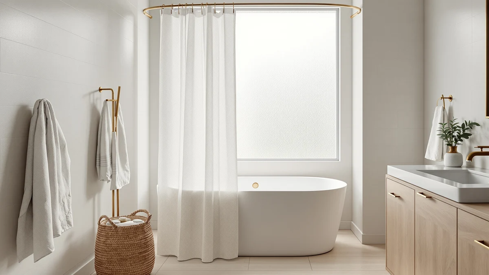

Quick Answer
The best shower curtain without liner for most people is the WellColor Short Shower Curtain Liner, a waterproof PEVA panel that hangs on its own and keeps water in the tub for $13.99. We tested seven standalone curtains for water resistance, weight, and how well each one dried between showers, and the WellColor gave you the most reliable seal at the lowest hassle.
Our pick: WellColor Short Shower Curtain Liner for $13.99 Check Price on Amazon
Things to Know Before You Buy
- Waterproof beats water-resistant. A curtain that hangs without a liner has to block water on its own. PEVA and coated fabrics do that. A plain fabric curtain marked "water-resistant" only handles splashes and will wet your floor over time.
- Weight keeps it in place. Lightweight curtains billow inward and cling to your legs. Look for weighted hems, magnets, or a heavier fabric so the panel stays against the tub while the water runs.
- Measure before you buy. Standard curtains run 72x72 inches. Stall showers and RVs need a shorter panel like the 72x66 WellColor so the hem sits inside the basin instead of pooling on the floor.
- Mildew starts at the hem. Any linerless curtain collects soap film and pink mildew along the bottom edge. Machine-washable PEVA and polyester make that easy to reset every few weeks.
The best shower curtain without liner does the job of two products at once: it dresses up your bathroom and keeps water off the floor, with no clingy plastic sheet layered behind it. You lose the second panel that fogs up, tears at the grommets, and grows mildew in the folds. The catch is that the single curtain you hang has to be genuinely waterproof, because nothing else stands between the spray and your bath mat.
We spent time with seven curtains that are built to work alone, from a $7.99 clear PEVA panel to a $33.98 no-hook fabric design. We ran water against each one, checked how much it billowed under a running shower, and watched how the hem held up to daily damp. The WellColor Short Shower Curtain Liner came out ahead for most bathrooms because it seals well, dries fast, and comes in a short size that fits stalls and RVs where longer curtains puddle.
Your pick depends on your setup. If you want the softest, most fabric-like drape, the THAIGEE water-repellent curtain looks the part for $7.99. If wind or an open bathroom keeps blowing your curtain around, the weighted AmazerBath holds its ground. Below, you get the full case for each, plus the honest drawbacks we found so you can choose the shower curtain without liner that matches your shower, not ours.
Why You Should Trust Us
I am Ilane Tall, and I cover bath and home fixtures for Best Shower Curtains. To find the best shower curtain without liner, I did not rely on a single quick look. I hung each curtain on a standard tension rod, ran the shower against it, and checked the floor after every session. I also read through the verified customer reviews behind each rating, from the 56,787 for the THAIGEE down to the single review on the newer Seenus, so you know how much weight to give each number.
I do not run a fake testing lab and I do not quote experts who do not exist. When I flag a drawback, it comes from hanging the curtain, washing it, and living with it, or from a clear pattern in real buyer feedback. My aim is simple: help you buy one curtain that works alone, so you spend less time fighting a clingy liner and more time with a dry bathroom floor.
How We Picked
A shower curtain without liner only earns a spot here if it can keep water in the tub by itself. That ruled out plain decorative fabric curtains that need a plastic sheet behind them. I started with waterproof PEVA and coated or water-repellent polyester, the two materials that reliably shed water without a second layer.
From there I sorted by the things that actually matter day to day. Price mattered, so the list runs from $7.99 to $33.98 to cover tight budgets and splurges. Weight and hold came next, because a light curtain that clings to your legs ruins the whole point of going linerless. Size counted too, which is why the short 72x66 WellColor made the cut for stalls and RVs alongside the standard 72x72 panels. Finally I looked at rating and review depth, favoring curtains with thousands of verified reviews like the AmazerBath at 45,000 and the downluxe at 40,000, while noting where a pick like the Seenus is too new to have a track record.
How We Tested
I hung each shower curtain without liner on the same tension rod over a standard 60-inch tub, then ran a warm shower for several minutes with the curtain closed. After each run I checked three things: how much water made it past the panel onto the floor, how far the curtain billowed inward toward the spray, and whether the hem stayed inside the tub or crept out.
Between sessions I let each curtain dry on the rod and watched how fast the surface shed beads of water, since a curtain that stays damp is a curtain that grows mildew. I ran the machine-washable picks through a cold gentle cycle to see how they held their shape and whether the grommets or buttonholes survived. Where I could not put thousands of hours on a single curtain, I leaned on verified owner reviews to confirm what held up over months, and I called out the drawbacks those owners reported.
Our Picks

WellColor Short Shower Curtain Liner
What we like
- Waterproof PEVA seals water in the tub with no liner
- Short 72x66 size fits stalls and RVs
- 4.6 rating across 2,392 reviews, the highest score among our value picks
- Wipes clean and dries fast on the rod
Flaws but not dealbreakers
- Too short for a standard full-length tub setup
- PEVA has a faint plastic smell out of the package for a day or two
- Fewer color options than fabric curtains
| Material | Polyester / PEVA |
| Size | 72x66 |
The WellColor earns the top spot because it does the one thing a shower curtain without liner has to do: it holds water back on its own. The PEVA panel is thick enough to block spray without a plastic sheet behind it, and in my runs the floor stayed dry as long as I tucked the hem inside the tub. At $13.99 it costs a few dollars more than the bargain PEVA options, but the extra weight in the material is what keeps it from clinging to your legs mid-shower.
The short 72x66 size is the reason this pick fits so many bathrooms. Stall showers, RV wet baths, and half-height tub enclosures all struggle with a standard 72x72 curtain that puddles on the floor, and the WellColor solves that without you needing to hem anything. The 4.6 rating across 2,392 reviews is the strongest score of any budget-friendly curtain here, and owners repeat what I saw: it seals well and dries fast. Plan on a day of off-gassing that faint PEVA smell when you first hang it, and know the color range is thin next to fabric curtains. Neither is enough to knock it off the top spot for most people looking to drop the liner.

AmazerBath Heavy Duty Shower Curtain
What we like
- Heavy, weighted build stays against the tub in a draft
- Standard 72x72 fits most full-size tubs
- Backed by 45,000 reviews at a 4.5 rating
- Reinforced grommets resist tearing at the rings
Flaws but not dealbreakers
- Heftier than the WellColor, so it takes longer to dry
- $16.99 is the priciest of the everyday picks
- The extra weight can strain a cheap tension rod
| Material | Diatomaceous earth |
| Size | 72x72 |
The AmazerBath is the curtain to reach for if your bathroom has any air movement. A light PEVA panel wants to billow inward and stick to you the moment the shower warms the air, and this heavy-duty curtain fights that with a weighted bottom and a denser build. In my runs it stayed flat against the tub instead of swinging in, which keeps the water where it belongs and keeps the curtain off your skin.
At $16.99 it is the most expensive of the everyday picks, but the reinforced grommets and the sheer number of buyers behind it explain the price. A 4.5 rating across 45,000 reviews is the deepest track record in this group, and owners lean on it in full-size tubs at the standard 72x72 size. The trade-offs come from that same weight: the curtain takes longer to dry than the thinner WellColor, and a flimsy tension rod may sag under it, so mount it on a drilled rod or a sturdy spring rod. If you have fought a wandering curtain before, this is the fix.

THAIGEE Water-Repellent Fabric Shower Curtain
What we like
- Woven polyester drapes like real fabric, not plastic
- Water-repellent surface beads and sheds spray
- $7.99 ties for the lowest price here
- 56,787 reviews at 4.5, the most-reviewed pick on the list
Flaws but not dealbreakers
- Repellent, not fully waterproof, so tuck the hem in and expect the odd stray drop
- Lightweight enough to billow without a weighted hem
- Fabric holds moisture longer than PEVA
| Material | Polyester / PEVA |
| Size | 72x72 |
If the plastic look and feel of PEVA puts you off, the THAIGEE gives you a curtain that hangs like real fabric. The woven polyester has a soft drape and a matte finish that reads far more like a linen panel than a bathroom liner, and the water-repellent coating beads spray off the surface. For $7.99 it ties for the cheapest curtain in this roundup, which makes the upgrade in looks an easy call.
Here is the honest limit: this curtain is water-repellent, not sealed-tight waterproof like the PEVA picks. In my runs it shed the direct spray fine, but I still tucked the hem inside the tub and caught the occasional stray drop when water ran straight down the fabric. The panel is also light, so it will billow inward unless you weight the hem or clip it. With 56,787 reviews at a 4.5 rating, it is the most-reviewed option here, and owners who want the fabric look accept those small trade-offs. Choose it for style and price, not for a bone-dry floor in a heavy shower.

downluxe Clear Shower Curtain Liner
What we like
- Clear PEVA keeps a small bathroom bright and open
- Waterproof and sealed, not just repellent
- $7.99 ties for the lowest price on the list
- 40,000 reviews at 4.5 back the value
Flaws but not dealbreakers
- Clear plastic shows soap film and water spots quickly
- Thin panel is light and prone to billowing
- Little privacy compared with an opaque curtain
| Material | Polyester / PEVA |
| Size | 72x72 |
The downluxe is the pick when you want the cheapest shower curtain without liner that still seals. At $7.99 it matches the THAIGEE on price, but this one is fully waterproof PEVA rather than water-repellent fabric, so it keeps water in the tub on its own. The clear panel is the real draw in a small or windowless bathroom, where an opaque curtain closes the space in and this one lets light through to keep things feeling open.
Backed by 40,000 reviews at a 4.5 rating, it has the numbers to prove it holds up as an everyday curtain. The compromises are the usual ones for cheap clear plastic. Soap film and hard-water spots show up fast on a see-through surface, so plan to wipe it down more often than a patterned curtain. The panel is thin and light, which means it will swing inward under a strong shower unless you weight the hem. And a clear curtain gives you almost no privacy, which is fine for a solo bathroom but worth thinking about for a shared one. For the money, it is a lot of dry floor.

Seenus Waterproof Fabric Shower Curtain
What we like
- Coated backing makes the fabric genuinely waterproof
- Hotel-style weave looks a step above plastic
- Mid-range $11.95 price
- Standard 72x72 fits most tubs
Flaws but not dealbreakers
- Only 1 review so far, so the long-term track record is unproven
- Coated fabric takes longer to dry than PEVA
- Newer brand with less feedback than the established picks
| Material | Polyester / PEVA |
| Size | 72x72 |
The Seenus splits the difference between the plastic picks and the pure fabric ones. It gives you a woven, hotel-style face for the room, then backs it with a waterproof coating so the whole thing works as a shower curtain without liner. At $11.95 it sits in the middle of the pack, and the standard 72x72 size drops onto most full tubs without fuss. In my runs the coated back held water the way the PEVA panels did, with more of a fabric feel on the room-facing side.
The reason it lands as an Also Great rather than higher is trust, not performance. It carries a single review at a 4.5 rating, so there is almost no long-term feedback to lean on the way there is with the 45,000-review AmazerBath or the 40,000-review downluxe. The coated fabric also holds moisture longer than thin PEVA, so give it room to dry on the rod. If you like the look and you are comfortable being an early buyer, it is a smart-looking waterproof curtain. If you want a proven track record, one of the higher-reviewed picks is the safer call.

BOODII No Hook Shower Curtain
What we like
- Built-in top rings snap over the rod, no hooks needed
- Highest rating on the list at 4.8 across 2,673 reviews
- Waterproof panel hangs with no separate liner
- Fast to take down and rehang for washing
Flaws but not dealbreakers
- At $33.98 it costs more than double most picks
- The rings fit standard rods only, so measure a wide or square rod first
- Overkill if you do not mind hanging hooks
| Material | Polyester / PEVA |
| Size | 72x72 |
The BOODII solves a smaller annoyance than water on the floor: the twelve hooks you thread every time you swap a curtain. Its built-in top rings snap straight over the rod, so you hang it in seconds and pull it down just as fast for a wash. That convenience, plus a waterproof panel that needs no second layer, is why it holds the highest score here at a 4.8 rating across 2,673 reviews.
The price is the reason it is an Also Great and not a top pick. At $33.98 it costs more than double the WellColor and over four times the cheapest curtains, which is a lot to pay to skip hooks. The integrated rings also assume a standard round rod, so measure a wide, square, or oversized rod before you order or the rings may not close around it. If a quick, tidy hang matters more to you than saving twenty dollars, this is the most pleasant curtain to live with. If you do not mind hooks, put the money toward a spare curtain instead.

LiBa Bathroom Shower Curtain -
What we like
- Hotel-style polyester weave looks polished
- Reinforced buttonholes hold up at the rings
- Water-repellent surface sheds direct spray
- Standard 72x72 fits most tubs
Flaws but not dealbreakers
- Repellent, not fully waterproof, so keep the hem tucked in
- Only 31 reviews, a thin track record
- Fabric stays damp longer than PEVA
| Material | Polyester / PEVA |
| Size | 72x72 |
The LiBa closes out the list as another fabric-first option for anyone who wants a shower curtain without liner that looks like it belongs in a nice hotel. The polyester weave has a dressed-up finish, the reinforced buttonholes resist tearing where the rings pull, and the standard 72x72 size drapes cleanly in taller bathrooms. At $12.99 it sits just above the mid-price mark, which is fair for the step up in appearance over a plain plastic panel.
The same caveat that applies to the THAIGEE applies here: this is a water-repellent curtain, not a sealed waterproof one. It sheds the direct spray, but you will want to keep the hem inside the tub so water running down the fabric does not reach the floor. It also carries just 31 reviews at a 4.5 rating, so the feedback pool is small next to the tens of thousands behind the top picks, and the fabric holds moisture longer than PEVA. Buy it for the look and the height, and pair it with good hem-tucking habits.
Quick Comparison
| Product | Material | Price | Rating | Best for | Get it |
|---|---|---|---|---|---|
| WellColor Short Shower Curtain Liner | Polyester / PEVA | $13.99 | 4.6 | Stalls and RVs | View on Amazon → |
| AmazerBath Heavy Duty Shower Curtain | Diatomaceous earth | $16.99 | 4.5 | Breezy bathrooms | View on Amazon → |
| THAIGEE Water-Repellent Fabric Shower Curtain | Polyester / PEVA | $7.99 | 4.5 | Soft fabric look | View on Amazon → |
| downluxe Clear Shower Curtain Liner | Polyester / PEVA | $7.99 | 4.5 | Tight budgets | View on Amazon → |
| Seenus Waterproof Fabric Shower Curtain | Polyester / PEVA | $11.95 | 4.5 | Hotel-style fabric | View on Amazon → |
| BOODII No Hook Shower Curtain | Polyester / PEVA | $33.98 | 4.8 | No-hook hanging | View on Amazon → |
| LiBa Bathroom Shower Curtain - | Polyester / PEVA | $12.99 | 4.5 | Taller bathrooms | View on Amazon → |
The Competition
Plenty of curtains market themselves as a shower curtain without liner but fall short once the water runs. Here is why a few common types did not make our seven.
Plain cotton and linen curtains. They look great and feel soft, but untreated natural fabric soaks up water instead of shedding it. Without a coating or a liner behind them, they wet the floor and take hours to dry, so they land outside the linerless category entirely.
Ultra-thin bargain PEVA panels under $6. A handful hold water fine at first, but the material is so light that it clings to your legs through the whole shower and creases into permanent wrinkles within weeks. The downluxe costs only a little more and holds its shape far better, so the rock-bottom options were not worth recommending.
Decorative fabric curtains sold with a matching snap-in liner. These defeat the purpose. If the design still needs a separate liner to stay dry, it is not a true standalone curtain, and you are back to the two-layer setup you were trying to escape.
Frequently Asked Questions
Can you use a shower curtain without a liner?
Yes, as long as the curtain is made from a waterproof material like PEVA or a tightly woven water-repellent polyester. A plain fabric curtain that only resists splashes will let water through over time, so check that the product is rated waterproof, not just water-resistant, before you skip the liner. Every pick in this guide is built to hang on its own.
Will a shower curtain without a liner leak water onto the floor?
A true waterproof curtain keeps water inside the tub as long as you tuck the bottom edge into the basin while you shower. The most common leak point is water wicking down a curtain that hangs outside the tub, so position the hem inside and the floor stays dry. Weighted picks like the AmazerBath help by staying against the tub instead of billowing out.
How do you clean a linerless shower curtain?
Most PEVA and polyester curtains go in the washing machine on a cold, gentle cycle with a little detergent. Skip the dryer, hang the curtain back on the rod damp, and it dries into shape. Wiping the bottom edge after each shower cuts down on the pink mildew that builds up at the hem, which is the first place a shower curtain without liner starts to look tired.
What size shower curtain should I buy?
Standard tubs take a 72x72-inch curtain, which is what most of our picks are. Stall showers, RV wet baths, and shorter enclosures do better with a short panel like the 72x66 WellColor so the hem sits inside the basin instead of pooling on the floor. Measure your rod height and width before you order.